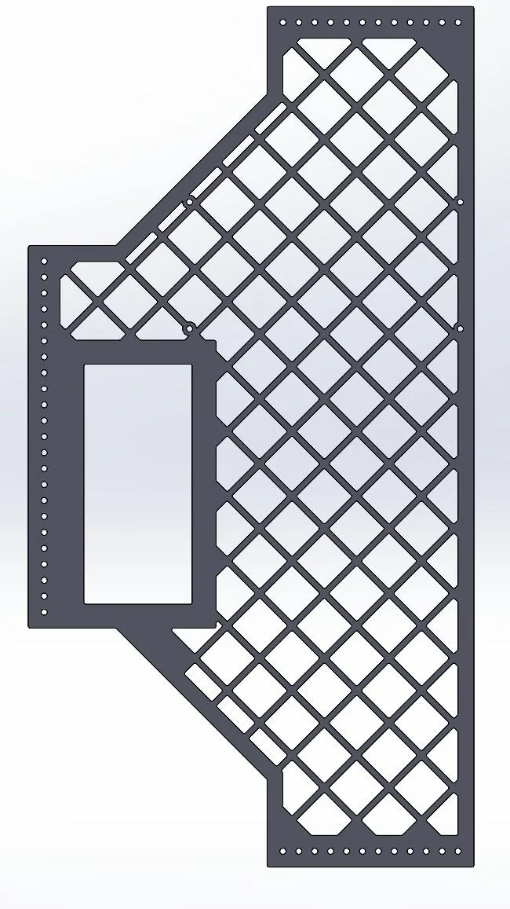
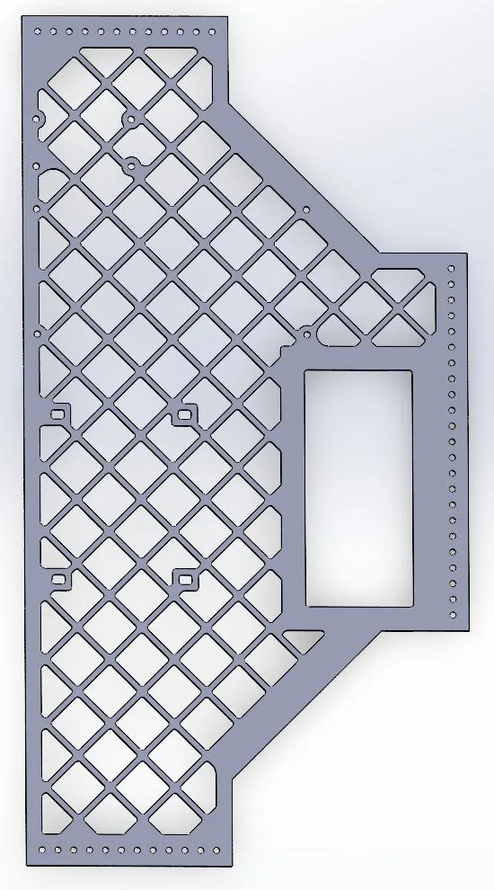
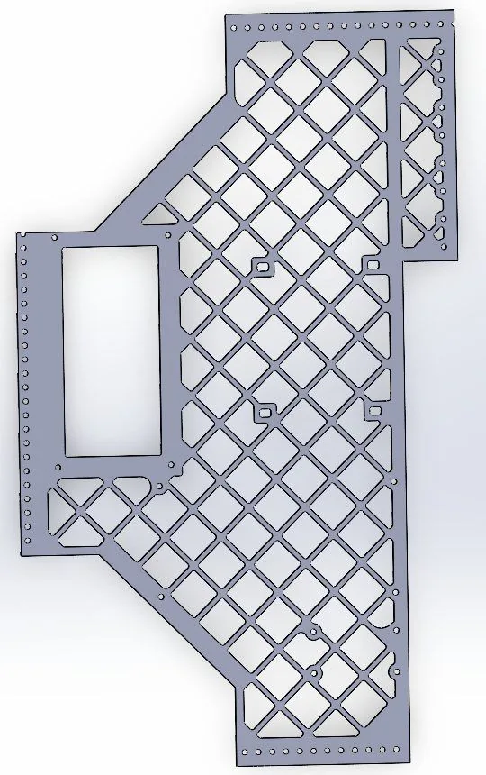
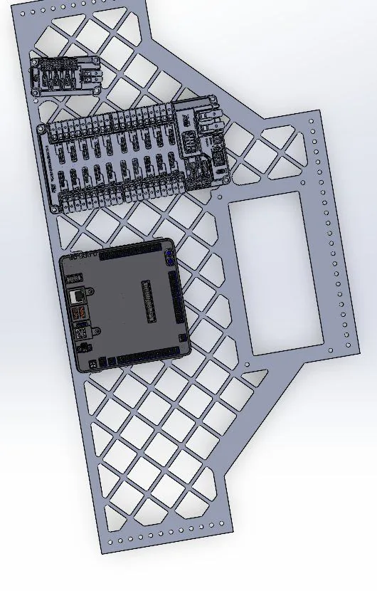

Belly pans: where the electronics live
The belly pan decides where every electrical component sits, which decides how the whole robot gets wired. As electrical lead I took it on to learn CAD, and I designed it around the wiring.
I started from a dimensioned outline fit to the 27 in frame and the swerve module clearances, with a cutout for mounting the battery Fig. 1.
Part placement, mounting holes, and overall size were all undecided, so the pan went through many revisions. I went half-width to save weight and leave room for the elevator motors on the other side of the robot, then pocketed it with a lattice to cut more weight while keeping solid areas for mounting Fig. 2 to 5.







I placed the PDH, roboRIO, and a mini power module to leave room for the thick power runs and to keep CAN wiring reachable for fast troubleshooting in the pits Fig. 6 and 7. The team's CNC cut the pan the same night I finished the design, and I stayed at the shop until about 3 AM to get it out.
The layout held up through wiring with no changes. When we later added a VRM for the Limelight cameras, it zip-tied straight into the pockets. I used the same approach for the belly pan on the 2026 robot.